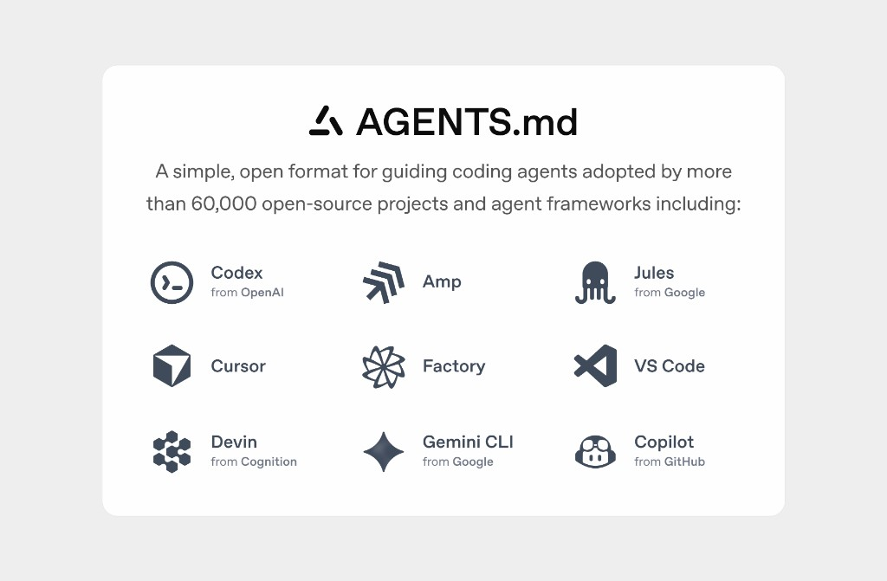
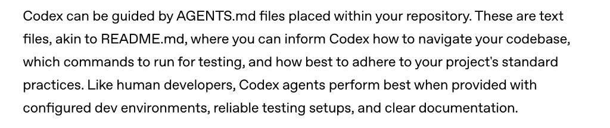
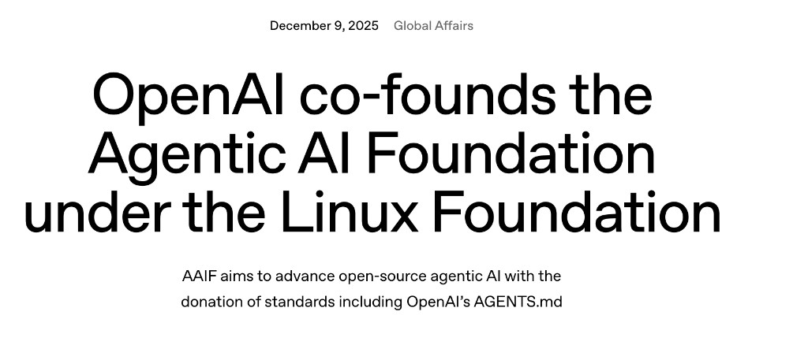
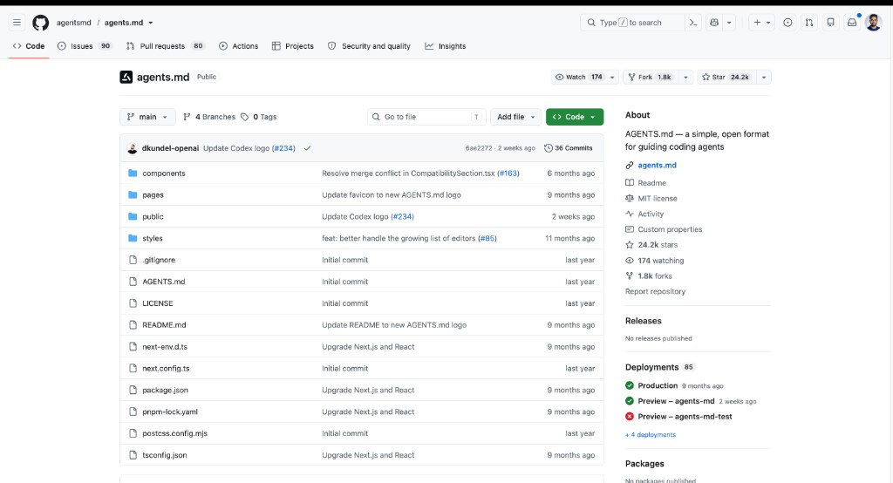
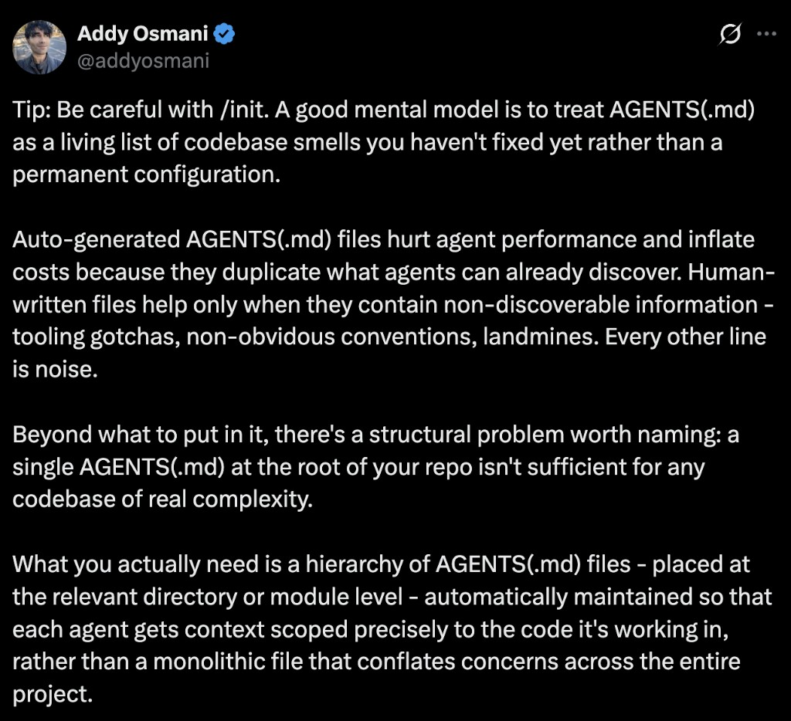
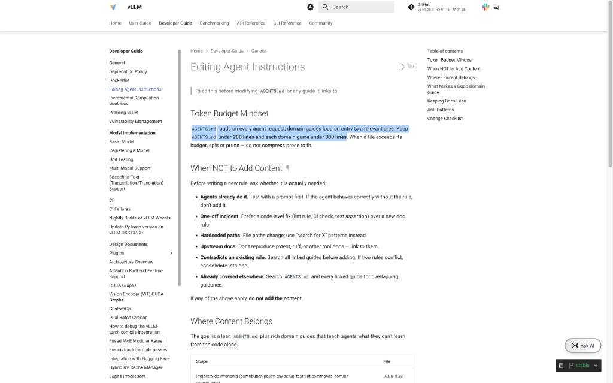
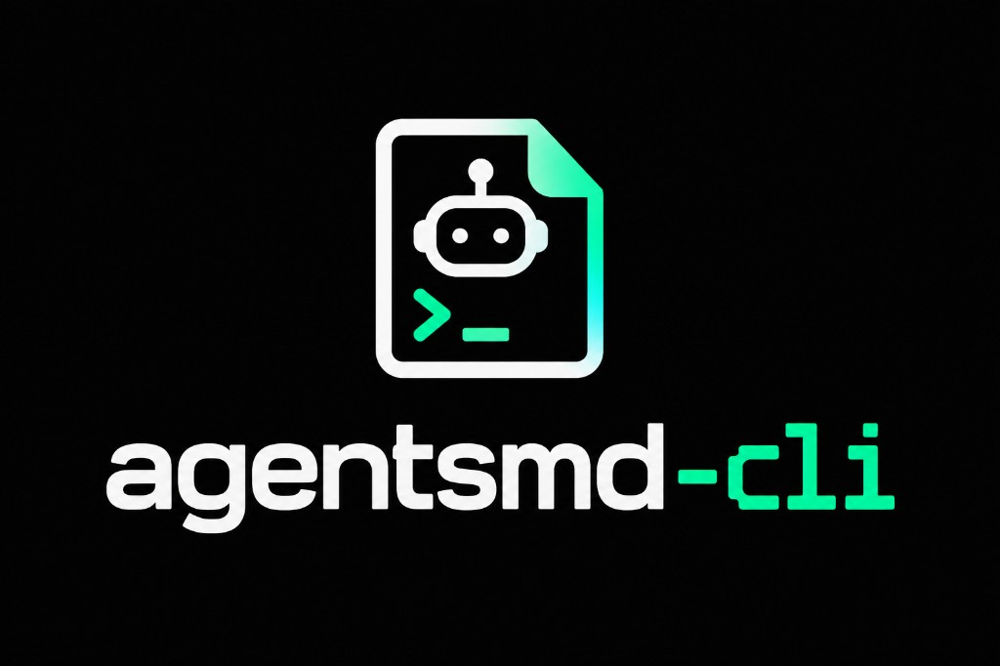

Slide 1 | Let AGENTS.md Write Itself | 1 minute
Let AGENTS.md Write Itself
Self-Improving Coding Agents, No RL Required
Rudraksh Karpe, Simplismart · Satyam Soni, NitroStack
Open with the question: What if the instructions we give coding agents could improve from the way agents actually work? The model is not retrained. This talk is about an instruction artifact that evolves from evaluated experience. Transition: First, who are we?
Slide 2 | Who We Are | 0.5 minute
Who We Are
Rudraksh Karpe
FDE - Simplismart
Satyam Soni
Developer Advocate - NitroStack
Keep this short. Introduce names and organizations only. Avoid biographies. The shared connection is infrastructure around developers and agent systems. Transition: Start from first principles.
Slide 3 | What Is AGENTS.md? | 2.5 minutes
What Is AGENTS.md?
AGENTS.md is a repository-local instruction file for AI coding agents.
Agents can see the code, but they don't automatically know the project's conventions, workflows, boundaries, or validation requirements.
The agent discovers AGENTS.md, loads its instructions into context, and uses them while planning, editing, testing, and reviewing code.

Think of it as: README.md for humans → AGENTS.md for coding agents
Explain that agents can inspect code, but they do not automatically know repository-specific decisions. AGENTS.md gives them a predictable place for those instructions. The applicable file can be nested, and the closest file wins. Transition: This convention is now bigger than one tool.
Slide 4 | From Codex Convention to Open Standard | 1.5 minutes
From Codex Convention to Open Standard



Introduced with Codex
Repository instructions for coding agents
Donated to AAIF
Neutral stewardship under the Linux Foundation
Widely adopted standard
24k+ GitHub stars
OpenAI released AGENTS.md in August 2025 and contributed it to the Agentic AI Foundation on December 9, 2025. OpenAI reported more than 60,000 open-source projects and agent frameworks at that time. The point is interoperability and neutral stewardship, not control by one vendor. Transition: But how are teams creating these files today?
Slide 5 | How's the World Writing AGENTS.md Today? | 2 minutes
How's the World Writing AGENTS.md Today?
Human writes it
Agent generates it
Community templates with best practices
Teams maintain it manually
As the repository changes, someone is expected to keep the instructions synchronized.
These authoring methods are useful. The limitation is that they are authoring workflows, not feedback loops. A generated starting point does not automatically incorporate what later sessions discover. Transition: The instructions do not experience the work.
Slide 6 | The Problem Is the Missing Feedback Loop | 2.5 minutes
The Problem Is the Missing Feedback Loop
AGENTS.md gives agents persistent repository context. But how does that context improve as agents actually work?
01
Repository changes
Commands, paths, architecture, and workflows evolve.
02
Instructions drift
A rule that was correct six months ago may now be wrong.
03
Agents repeat mistakes
The same failed exploration can happen again because nothing records the lesson.
04
More rules can make things worse
Teams respond by adding more instructions, increasing context and creating conflicting or stale guidance.

The question is how we continuously improve what belongs inside it.
Do not say every AGENTS.md becomes bad. The production lesson from vLLM is to keep instructions lean, prune stale content, avoid reactive accumulation, avoid hardcoded paths, remove duplication, and test whether a rule is needed. Transition: Instead of predicting every rule, learn from the trajectory.
Slide 7 | What Belongs Inside It Is Extremely Important | 2 minutes
What Belongs Inside It Is Extremely Important
Maintaining agent instructions is already an engineering discipline.
01
Keep it lean
AGENTS.md < 200 lines
02
Don't blindly add rules
Test whether the rule is actually needed.
03
Learn from repeated mistakes
Good domain guides contain fixes for repeated mistakes.

This is already how mature projects think about agent instructions. Our question is: can we make part of this maintenance loop systematic?
The vLLM guidance treats agent instructions as an engineered artifact with token budgets, scope, anti-patterns, and a change checklist. The important lesson is not to add more text. It is to preserve only specific, non-obvious, tested guidance. Transition: Can trajectory evidence make part of this discipline systematic?
Slide 8 | The Agent's Work Becomes the Feedback Signal | 2 minutes
The Agent's Work Becomes the Feedback Signal
The agent's own trajectories contain the evidence needed to improve its repository context.
AGENTS.md
Repository memory · Instructions
Agent Work / Trajectory
Experience
Repeated pattern?
repeated · useful · repository-specific · worth remembering
AGENTS.md
Repository memory ↺
The agent's work contains the evidence for what it should remember.
AGENTS.md is repository memory. Trajectories are experience. A single mistake is not enough. Look for repeated, useful, repository-specific knowledge, create a suggestion, and require validation before it enters memory. Transition: This is learning at the instruction layer, not model training.
Slide 9 | Introducing agentsmd-cli | 2 minutes
Introducing agentsmd-cli
A feedback layer for AGENTS.md
agentsmd-cli captures what happens during real coding-agent work, extracts potential lessons, and gives those lessons a path to become validated repository instructions.

AGENTS.md
↓
Coding Agent
↓
Task Trajectory
↓
Reflect
↓
Candidate Rule
↓
Evaluate
↓
Promote
↓
AGENTS.md v1
Turn ephemeral agent experience into validated, durable repository knowledge.
Position agentsmd-cli as a feedback layer for repository instructions. It captures real coding-agent trajectories, reflects on potential lessons, evaluates candidate rules, and promotes validated knowledge back into AGENTS.md. The loop turns temporary experience into durable repository context. Transition: Watch the loop operate in the demo.
Slide 10 | DEMO TIME | 5 minutes
DEMO TIME
Run the live agentsmd-cli demonstration.
Slide 11 | Benchmarks | 2 minutes
Benchmarks
Benchmark details will be added later.
Slide 12 | Scan to use agentsmd-cli | 1 minute
Scan to use agentsmd-cli
github.com/rudrakshkarpe/agentsmd-cli
Scan to use it, contribute to it, and share your feedback.
Invite the audience to scan the QR code, try agentsmd-cli, contribute to the repository, and share feedback.
Slide 13 | Q&A | 5 minutes
Q&A
Open the floor for audience questions.